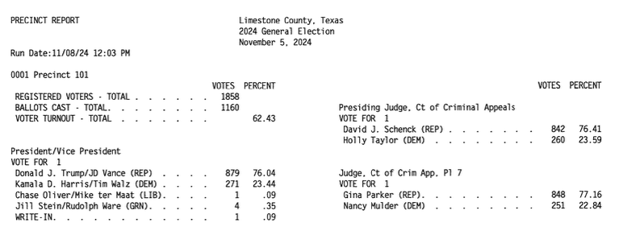
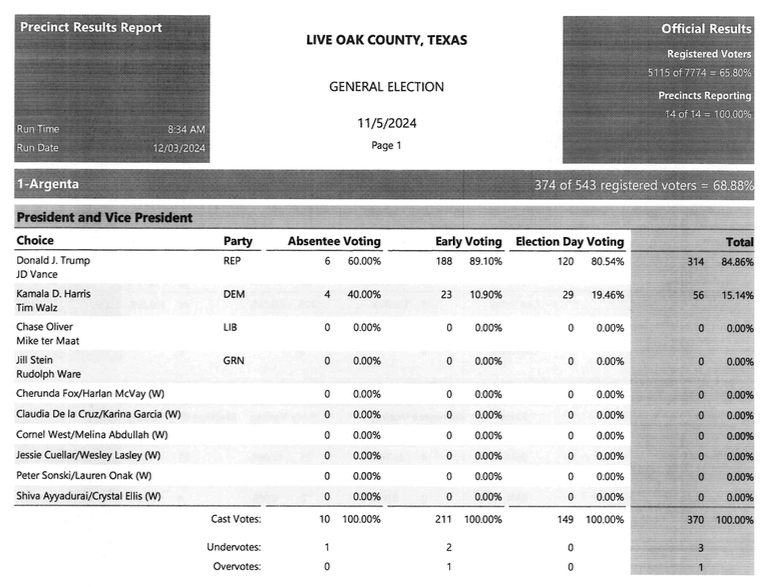
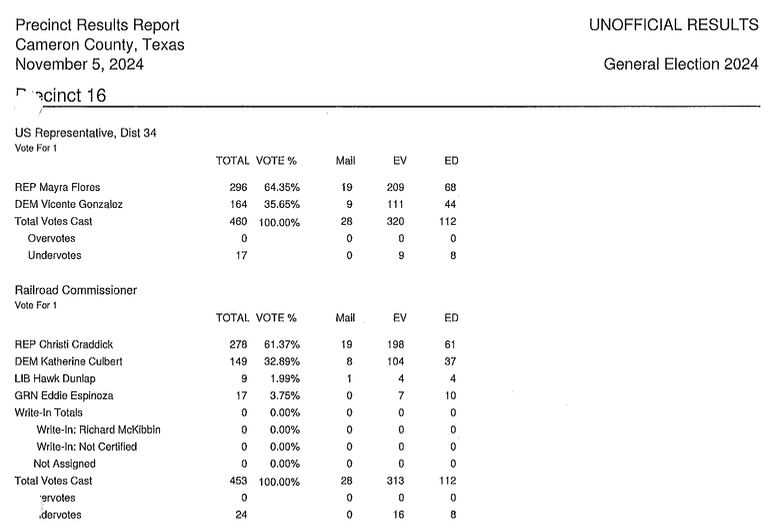

In the 12-plus years that we’ve been turning official precinct election results into data at OpenElections, the single biggest problem has been converting pictures of results into CSV files. Many of the precinct results files we get are image PDFs, and for those there are essentially two options: data entry or Optical Character Recognition. The former has some advantages, but not many. While most people are not great at manual repetitive tasks, you can improve with lots of practice, to the point where the results are very accurate. In the past we did pay for data entry services, and while we developed working relationships with two individuals in particular, the results almost always contained some mistakes and the cost could run into the hundreds of dollars pretty quickly. For a volunteer project, it just didn’t make sense.
We also used commercial OCR software, most often Able2Extract, which did pretty well, but had a harder time with PDFs that had markings or were otherwise difficult to parse. Thankfully, most election results PDFs are in one of a small handful of formats, which makes things a bit less complicated, but commercial OCR has too many restrictions.
For parsing image PDFs into CSV files, Google’s Gemini is my model of choice, for two main reasons. First, the results are usually very, very accurate (with a few caveats I’ll detail below), and second, Gemini’s large context window means it’s possible to work with PDF files that can be multiple MBs in size. Here are some examples using image PDFs from Texas counties of how OpenElections uses Gemini for its work.
Limestone County
The Limestone County file containing its 2024 general election results isn’t too bad for an image PDF:
It has clear black text on a white background without markings. But two big issues make it hard for most OCR software to deal with: the two-column layout, with results from races on the left and the right; and those annoying dots between the end of candidate values and the vote totals. It’s like a delimited layout within a fixed-width layout. If you use OCR software, generally you have to draw the boxes around areas of PDFs like this in order to make the extraction results usable. This PDF isn’t too large at 42 pages, but that’s still a fair bit of manual labor to get the results, and even then there would be some cleanup required.
This is where good LLMs should be able to make a difference, because what you want is high-quality OCR results and the ability to provide some domain or business logic to the process without having to do it all yourself. You can see from this Google Gemini session that I didn’t have to provide much in the way of instructions after giving an example of the CSV output and some basic office standardization, just “The results are split into two columns on each page; parse the left column first and then the right column.”
How did Gemini do? Pretty well, almost perfectly. The numbers are accurate, according to some spot checks of candidate totals from the Texas Secretary of State website. It did make some formatting mistakes; removing a blank column in some of the Registered Voters and Ballots Cast rows, for example. But that’s a quick fix, and the finished result is exactly what we need. It’s easy to be impressed, but it’s also just 42 pages and had a simple format.
Live Oak County
The PDF with results from Live Oak County comes in a common format that features a green background. But Live Oak’s image PDF is a black and white scan with different variations of shading, plus we don’t want the four columns containing percentages. For commercial OCR software, this would be a real problem thanks to the layout alone. Indeed, for electronic PDFs that are produced using the same software, we’ve got a Python script that converts the PDF to text and parses it into a CSV file. But this one is different:

The prompt to convert this 90-page image PDF is like the first one: an example tailored to the first set of results and the unusual placement of the registered voters and ballots cast figures. Gemini repeated the earlier mistake of removing a blank column from the Registered Voters and Ballots Cast rows, but otherwise was spot on in its accuracy. Here’s the fixed CSV result.
Cameron County
One of the areas where LLMs, even Gemini, can struggle with is sustained processes. Converting a few or a few dozen pages is usually pretty simple work for high-performing models, but what about hundreds of pages? Cameron County’s PDF, all 11.7 MB of it, offers a good challenge, and not just owing to its size:

Notice how the “Precinct 16” is slightly obscured by an actual punch-hole in this document, and the same is true at the bottom of the image with “Overvotes” and “Undervotes”. Both of those issues could trip up commercial OCR engines. Providing an example of the output, as in the Limestone example, should help fill those literal holes, along with further instructions to ignore the VOTE % column entirely. The first attempt at parsing the 653-page PDF eventually “worked” in that it produced a CSV file. But I had to urge Gemini to “continue” multiple times, and it appeared to need more attention starting about halfway through. Most important, the vote figures in the CSV file were close, but not always correct. Back to the drawing board.
The process that generated an accurate CSV file involved splitting the single PDF into multiple parts of about 100 pages each and feeding them one at a time to Gemini. That did mean copying and pasting the output, and one drawback of providing a lot of information in one session was that some of the offices didn’t get quoted properly in the CSV file (to be fair, this probably wouldn’t matter if I were using Gemini’s structured output feature). That meant a little bit of clean-up work, but again, the end result is an accurate precinct results file in about an hour. From a 653-page image PDF, with no data entry.
Could other models do similar work? Probably so, especially for smaller PDFs. But there are couple of other things that make Gemini the first choice for this: its AI Studio UI allows me to turn the temperature down to 0 (less creativity) and, for models where the “thinking mode” is optional, the ability to disable it if the task at hand is pretty straight-forward. In the six weeks since we started working on Texas precinct results, we’ve been able to convert them for more than half of the state’s 254 counties, including many image PDFs like the ones on display here. That pace simply wouldn’t be possible with data entry or traditional OCR software.
Speed isn’t the most important factor here, though: accuracy is, and using LLMs still means a system of checks to ensure that the results are what the originals say they are. One step in that is taken care of by a suite of tests that run every time a new or changed CSV gets pushed to one of our data repositories. Those tests look for some formatting issues, duplicate records and basic math inconsistencies. A second step - for now manual - is verifying that multiple totals derived from the precinct CSV match the numbers in an official cumulative report like this one from Live Oak County. A better version of that could also involve using LLMs to produce both cumulative and precinct-level data, but that would raise the possibility that a model makes similar mistakes in different documents. If you have ideas, head over to our GitHub organization and get involved.